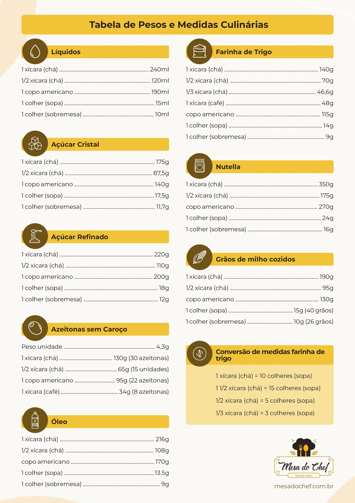

Conversor de Medidas Culinárias. Imagem de pxfuel.com
Conversor de Medidas Culinárias Online! Converta medidas de ingredientes para receitas: xícaras, colheres de chá, colheres de sobremesa, mililitros(ml), gramas e outros. Escolha um ingrediente, coloque a unidade de medida e clique no botão para converter.
{{inputvalue}}{{quantidadeAtiva}}{{medidaAtiva}} de
{{ingredienteAtivo}} equivale(m) a:
{{Ugramas}} Gramas.
{{xicaraCha}} Xícara(s) de Chá{{complementoXicara}}.
{{colherSopa}} Colher(es) de Sopa{{complementoColherSopa}}.
{{colherSobremesa}} Colher(es) de Sobremesa{{complementoColherSobremesa}}.
- Uma colher de sopa comporta aproximadamente 17g de açúcar.
- Uma colher de sobremesa comporta aproximadamente 11g de açúcar.
- Uma colher de chá comporta aproximadamente 6g de açúcar.
- Uma colher de café comporta aproximadamente 3g de açúcar.
- Uma xícara de chá comporta aproximadamente 175g de açúcar.
- Um copo americano comporta aproximadamente 140g de açúcar.
- Uma colher de sopa comporta aproximadamente 24g de carne moída.
- Uma xícara de chá comporta aproximadamente 172g de carne moída.
- Um copo americano comporta aproximadamente 138g de carne moída.
- Uma xícara de chá comporta aproximadamente 210g de arroz cru.
- Um copo americano comporta aproximadamente 180g de arroz cru.
- Uma colher de sopa comporta aproximadamente 14g de farinha de trigo.
- Uma xícara de chá comporta aproximadamente 140g de farinha de trigo.
- Um copo americano comporta aproximadamente 115g de farinha de trigo.
- Uma xícara de chá comporta aproximadamente 250g de feijão cru.
- Um copo americano comporta aproximadamente 170g de feijão cru.
- Uma Unidade de Azeitona sem Caroço Úmida pesa aproximadamente 4,3g.
- Uma xícara de chá comporta aproximadamente 130g de Azeitonas sem Caroço ou 30 unidades.
- Um copo americano comporta aproximadamente 95g de Azeitonas sem Caroço ou 22 unidades.
- Uma xícara de café comporta aproximadamente 34g de Azeitonas sem Caroço ou 8 unidades.
- Uma colher de sopa comporta aproximadamente 18g de frango desfiado.
- Uma xícara de chá comporta aproximadamente 128g de frango desfiado.
- Uma colher de sopa comporta aproximadamente 15ml(18g) de mel.
- Uma colher de sobremesa comporta aproximadamente 10ml(12g) de mel.
- Uma colher de chá comporta aproximadamente 5ml(6g) de mel.
- Uma colher de café comporta aproximadamente 2.5ml(3g) de mel.
- Uma xícara de chá comporta aproximadamente 240ml(300g) de mel.
- Um copo americano comporta aproximadamente 190ml(237g) de mel.
- Uma colher de sopa comporta aproximadamente 18g de manteiga.
- Uma colher de sobremesa comporta aproximadamente 12g de manteiga.
- Uma colher de chá comporta aproximadamente 6g de manteiga.
- Uma colher de café comporta aproximadamente 3g de manteiga.
- Uma colher de sopa comporta aproximadamente 9g de pó de café.
- Uma colher de sobremesa comporta aproximadamente 6g de pó de café.
- Uma colher de chá comporta aproximadamente 3g de pó de café.
- Uma xícara de chá comporta aproximadamente 90g de pó de café.
- Um copo americano comporta aproximadamente 60g de pó de café.
- Uma colher de sopa comporta aproximadamente 18g de sal.
- Uma colher de sobremesa comporta aproximadamente 12g de sal.
- Uma colher de chá comporta aproximadamente 6g de sal.
- Uma colher de café comporta aproximadamente 3g de sal.
*Os valores dosdas {{medidaAtiva}} podem variar.
Tabela de Ingredientes Comuns: Medidas de Copos e ColheresConvertidas
Medida
Ingrediente
Quantidade
Xícara de Chá
Açúcar Cristal
175g
Arroz Cru
210g
Farinha de Trigo
140g
Feijão Cru
250g
Frango Desfiado
128g
Líquido(s)
240ml
Mel
300g
Pó de Café
90g
Medida
Ingrediente
Quantidade
Colher de Sopa
Açúcar Cristal
17.5g
Farinha de Trigo
14g
Frango Desfiado
18g
Líquido(s)
15ml
Manteiga
18g
Mel
18.8g
Pó de Café
9g
Sal Comum
18g
Medida
Ingrediente
Quantidade
Colher de Sobremesa
Açúcar Cristal
11.7g
Farinha de Trigo
9.3g
Frango Desfiado
12g
Líquido(s)
10ml
Manteiga
12g
Mel
12.5g
Pó de Café
6g
Sal Comum
12g
Medida
Ingrediente
Quantidade
Colher de Chá
Açúcar Cristal
5.8g
Farinha de Trigo
4.6g
Líquido(s)
5ml
Manteiga
6g
Pó de Café
3g
Sal Comum
6g
Medida
Ingrediente
Quantidade
Colher de Café
Açúcar Cristal
2.9g
Farinha de Trigo
2.3g
Líquido(s)
2.5ml
Mel
3.1g
Pó de Café
1.5g
Sal Comum
3g
Medida
Ingrediente
Quantidade
Copo Americano
Açúcar Cristal
140g
Arroz Cru
180g
Farinha de Trigo
115g
Feijão Cru
170g
Frango Desfiado
105g
Líquido(s)
190ml
Mel
237.5g
Pó de Café
60g
Sal Comum
260g
Tabela de Conversão de Medidas (Açúcar Cristal)
Medida
Quantidade
Convertido
1 xícara (chá)
175g
10 colheres (sopa).
1 1/2 xícara (chá)
262.5g
15 colheres (sopa)
1/2 xícara (chá)
87.5g
5 colheres (sopa).
1/3 xícara (chá)
43,75g
2 colheres (sopa) + 1 colher (chá).
1/4 xícara (chá)
21,87g
1 colher (sopa) + 1 colher (café).
Tabela de Conversão de Medidas (Farinha de Trigo)
Medida
Quantidade
Convertido
1 xícara (chá)
140g
10 colheres (sopa).
1 1/2 xícara (chá)
210g
15 colheres (sopa).
1/2 xícara (chá)
70g
5 colheres (sopa).
1/3 xícara (chá)
46.66g
3 colheres (sopa) + 1 colher (café).
1/4 xícara (chá)
35g
2 colheres (sopa) + 1 colher (chá).
Tabela de Conversão de Medidas (Líquidos)
Medida
Quantidade
Convertido
1 xícara (chá)
240ml
1 copo americano + 3 colheres (sopa) + 1 colher (chá) ou 16 colheres (sopa).
1 1/2 xícara (chá)
360ml
1 1/2 copo americano + 6 colheres (sopa) ou 24 colheres (sopa)
1/2 xícara (chá)
120ml
7 colheres (sopa) + 1 colher (chá).
1/3 xícara (chá)
80ml
5 colheres (sopa).
1/4 xícara (chá)
60ml
3 colheres (sopa) + 1 colher (sobremesa).
Tabela Fracionária
Valor Fracionário
Valor Decimal
1/4 (Um Quarto)
0.2
1/3 (Um Terço)
0.3
1/2 (Meio)
0.5
1 1/2 (Um e Meio)
1.5
2 1/2 (Dois e Meio)
2.5
2/3
0.6

Um pouco mais sobre o conversor de medidas culinárias
Para medir as quantidades corretas, utilizamos balanças de cozinha e medidores comuns. Quando calculamos a quantidade de uma colher (sopa), pesamos algumas vezes uma colher rasa e uma colher cheia. Em média, uma colher (sopa) de açúcar tem cerca de 17,5 gramas, considerando que uma colher cheia cabe aproximadamente 19 gramas e uma colher rasa 13 gramas na maioria dos testes realizados.
Também buscamos informações confiáveis na internet e testamos em casa usando uma balança de cozinha e utensílios como xícaras padrão de 240ml, colheres de sopa, café, sobremesa, chá e copos americanos tradicionais de bar. Combinando todas essas abordagens, temos confiança de que os valores fornecidos em nosso conversor online são precisos para ajudar qualquer pessoa que precise de medidas para receitas e culinária em geral.
Palavras-Chave: Conversor de medidas para cozinha, conversor de medidas culinárias, converter gramas para xícaras, converter gramas para colheres, converter ml para colheres de sopa, conversor culinário, conversor de medidas, tabela conversão de medidas, conversor de medidas de peso, transformar xícaras em colheres de sopa, conversão online de medidas de colher para cozinha, mesa do chef.